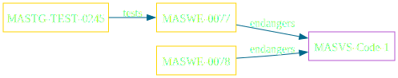
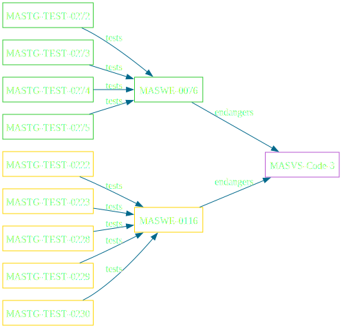

Einleitung
Übersicht
- Mobile Apps haben viele Dateneingangspunkte einschließlich UI, IPC, Netzwerk und Dateisystem.
- Apps können durch nicht vertrauenswürdige Akteure modifizierte Daten empfangen.
- Entwickler sollten diese Daten entsprechend behandeln und sie vor der Verwendung ordnungsgemäß überprüfen und bereinigen.
- Programmieranfälligkeiten, wie z.B. Speicherbeschädigungsfehler, sind schwer zu erkennen, können aber mit sicherer Architektur und Programmierpraktiken verhindert werden
- Es sollten auch App-Updates durchgesetzt werden, um sicherzustellen, dass die App auf aktuellen Plattformen läuft und Benutzer vor bekannten Schwachstellen geschützt sind.
Verification Controls
MASVS-CODE-1
The app requires an up-to-date platform version.
MASVS-CODE-2
The app has a mechanism for enforcing app updates.
MASVS-CODE-3
The app only uses software components without known vulnerabilities.
MASVS-CODE-4
The app validates and sanitizes all untrusted inputs.
Weakness Enumeration
MASVS-CODE-1
L2
- MASWE-0077: Running on a recent Platform Version Not Ensured
- MASWE-0078: Latest Platform Version Not Targeted
MASVS-CODE-2
L2
- MASWE-0075: Enforced Updating Not Implemented
MASVS-CODE-3
L1, P
- MASWE-0076: Dependencies with Known Vulnerabilities
L2
- MASWE-0116: Compiler Provided Security Features Not Used
MASVS-CODE-4
L1, P
- MASWE-0079: Unsafe Handling of Data from the Network
- MASWE-0080: Unsafe Handling of Data from Backups
- MASWE-0081: Unsafe Handling Of Data From External Interfaces
- MASWE-0082: Unsafe Handling of Data From Local Storage
- MASWE-0083: Unsafe Handling of Data From The User Interface
- MASWE-0084: Unsafe Handling of Data from IPC
L1, P (cont.)
- MASWE-0086: SQL Injection
L2
- MASWE-0085: Unsafe Dynamic Code Loading
- MASWE-0087: Insecure Parsing and Escaping
- MASWE-0088: Insecure Object Deserialization
Testing Guide
MASVS-CODE-1

MASVS-CODE-2
MASVS-CODE-3

MASVS-CODE-4